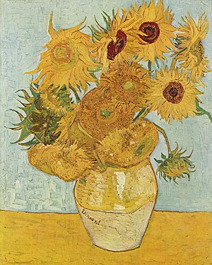

Nascido numa família de classe média alta, Van Gogh começou a desenhar ainda criança, sendo descrito como uma pessoa séria, quieta e pensativa. Trabalhou como vendedor de arte quando jovem e viajava frequentemente. Porém, entrou em depressão depois de ser transferido para Londres. Eventualmente, Van Gogh acabou por se voltar para a religião, tendo passado algum tempo como missionário protestante na Bélgica. Ao longo dos anos enfrentou problemas de saúde e solidão, até começar a pintar em 1881, tendo-se mudado para casa dos seus pais. O seu irmão mais novo, Theo, apoiou-o financeiramente e os dois mantiveram uma duradoura e prolífica correspondência ao longo da vida de ambos. Os seus primeiros trabalhos exploravam o tema da natureza-morta e retratos da vida no campo. Em 1886, Van Gogh mudou-se para Paris onde se encontrou com vanguardistas como Émile Bernard e Paul Gauguin, que se opunham à sensibilidade impressionista. Lá, à medida que produzia suas obras, criou uma nova abordagem às naturezas-mortas e às paisagens, com suas pinturas a assumir cores mais vivas enquanto desenvolvia um estilo que se estabeleceu por completo em 1888, durante a sua estadia em Arles. Durante esse período, o pintor também ampliou seus temas que passaram a incluir oliveiras, ciprestes, campos de trigo e girassóis.

Durante a sua vida, Vincent teve episódios psicóticos e delírios, temendo pela sua estabilidade mental e negligenciando frequentemente a sua saúde física, por um lado, ao não manter uma alimentação regular e, por outro lado, bebendo muito. Sua amizade com Gauguin terminou numa briga que culminou com um ataque de fúria de Van Gogh, durante o qual, cortou parte de sua própria orelha esquerda com uma lâmina. Acabou por passar algum tempo internado em vários hospitais psiquiátricos, incluindo o período passado no Saint-Rémy-de-Provence. Depois de ter recebido alta, ficou sob os cuidados do médico homeopata Paul Gachet, mudando-se para o vilarejo de Auvers-sur-Oise.
Não tendo obtido sucesso nem reconhecimento durante sua vida, Van Gogh era encarado como um louco e um fracassado, conquistando alguma fama apenas após seu suicídio. O agravamento do seu estado de depressão, levou o pintor a disparar um revólver contra o seu próprio peito no dia 27 de julho de 1890, vindo a falecer na sequência dos ferimentos causados apenas dois dias depois.